라즈베리파이에서 mIRC 채팅서버 구축하기
라즈베리파이에서 mIRC 채팅서버 구축하기
안녕하세요. AkibaTV입니다.
이번에 소개할 내용은 라즈베리파이에서 mIRC 채팅서버 구축하기 입니다.
mIRC라면 생소한 분들도 많으실거라 생각 됩니다만 2010년대에 들어오기 전까지만해도
상당한 인기로 많은 사람들이 이용을 해온 채팅서버 입니다.
지금은 게임회사에서 게임내 채팅서버로 mIRC 채팅서버를 많이 활용하는걸로 알고 있습니다.
mIRC를 이용해서 불법 프로그램이나 여러가지 영상들을 공유하는 기능으로도 많이 사용했습니다.
그래서 라즈베리파이로 mIRC 채팅서버 구축하는 방법을 알아보도록 하겠습니다.
우선 라즈베리파이를 VNC로 접속후 터미널을 실행을 해주시기 바랍니다.
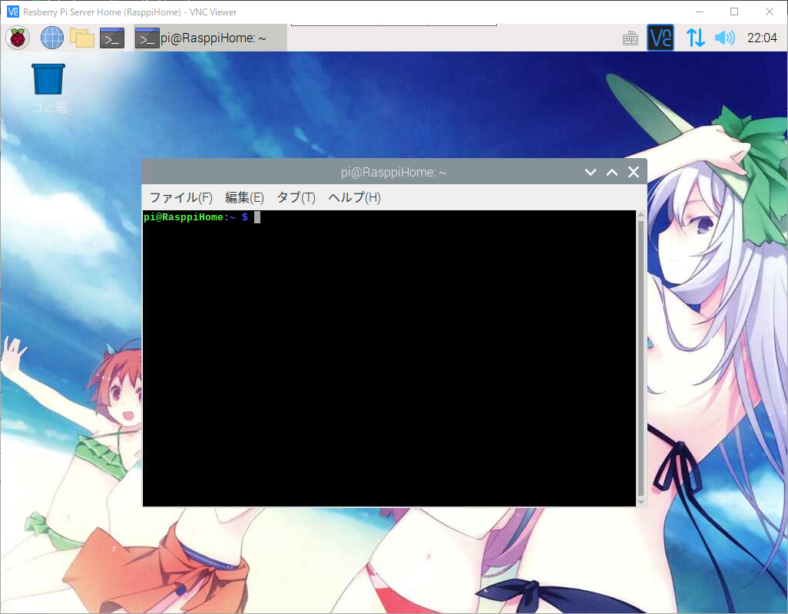
irc프로그램을 설치를 위해서 아래의 명령어를 입력해 주세요.
1 | $ sudo apt-get install ircd-hybrid |
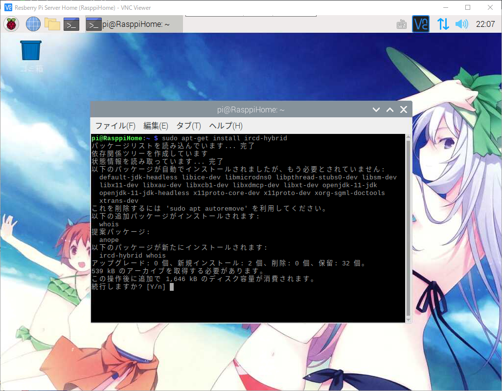
위와같이 [Y/n]을 입력창이 나오게 되면 Y를 입력해 주세요.
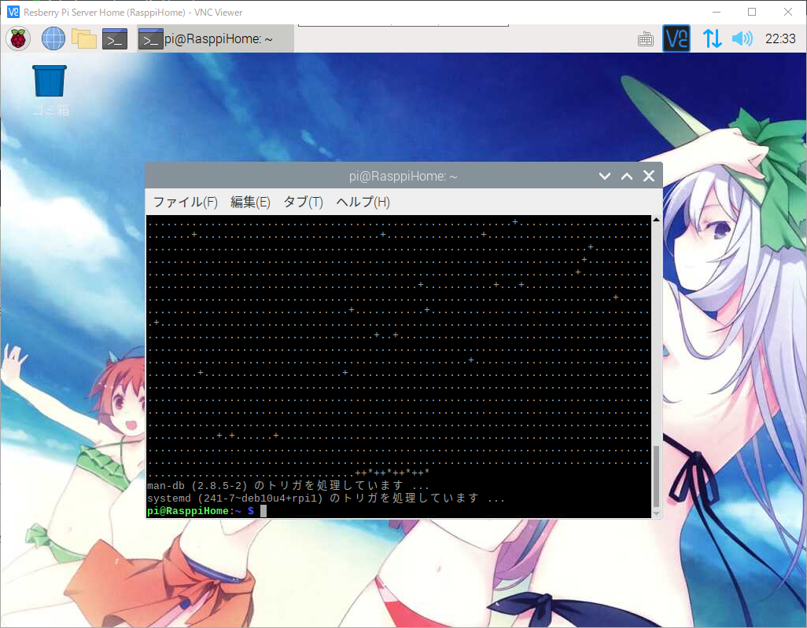
설치가 완료 되었으면 아래의 명령어를 입력해 주세요.
1 | $ sudo vi /etc/ircd-hybrid/ircd.conf |
1 | # ircd.conf를 vi에디터로 여시고 한참 내리시다 보시면 |
IP주소를 변경을 하셨으면 :wq를 입력해서 vi에디터를 저장후 종료를 하시기 바랍니다.
그리고 irc서버를 재기동하여 설정 정보를 적용을 해주어야만 합니다.
아래의 명령어를 입력해서 irc서버를 재기동 합니다.
1 | # irc서버 중지 |
irc서버 재기동까지 완료를 하셨으면 mIRC프로그램을 받아서 설치를 해주시기 바랍니다.
mIRC프로그램은 공식 사이트에서 다운로드 받으실수가 있습니다.
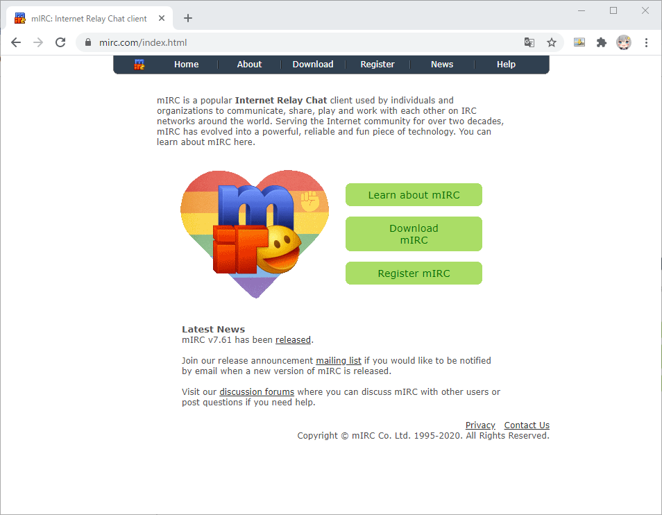
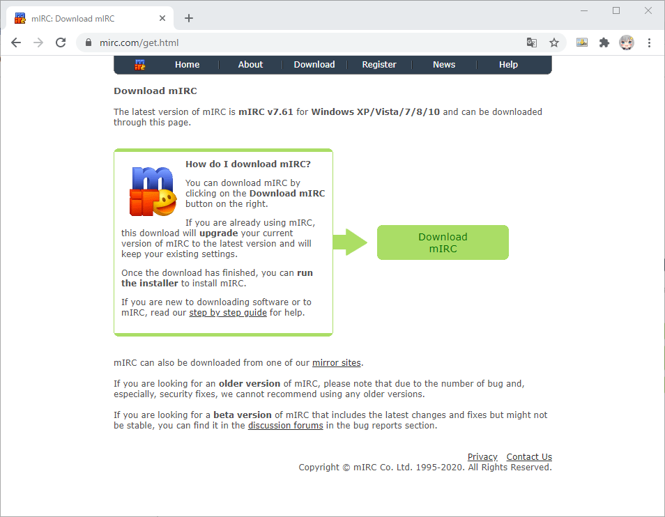
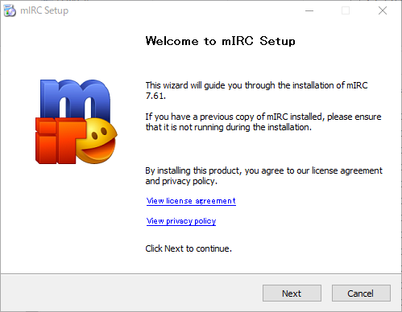
다운로드하신 mIRC프로그램을 실행하시면 설치화면이 나오게 되며
설치를 해주시기 바랍니다.
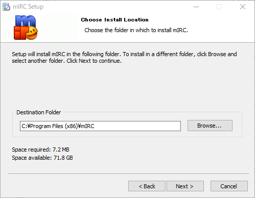
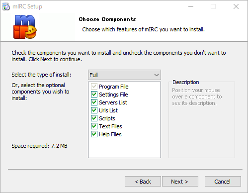
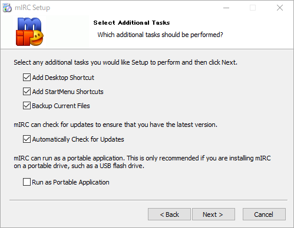
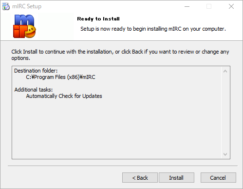
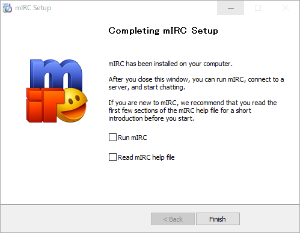
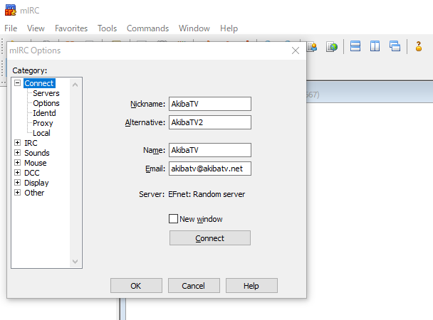
처음 실행하시면 서버에 접속후 사용할 닉네임과 기본 정보를 입력하시고 Servers메뉴로 이동을 해주세요.
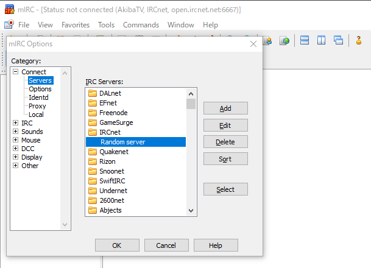
Add버튼을 눌러서 서버를 추가 합니다.
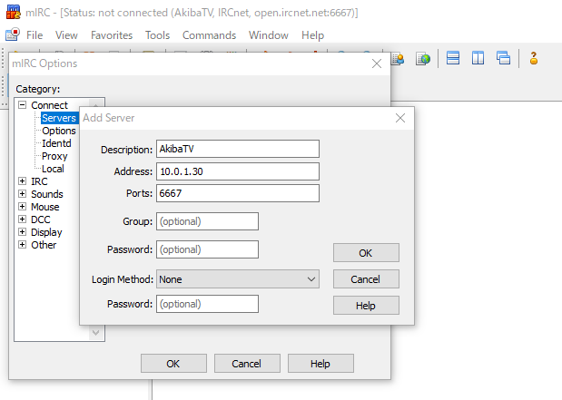
위와같이 자신의 라즈베리파이 서버에 맞게 입력을 해주시고 OK버튼을 눌러주세요.
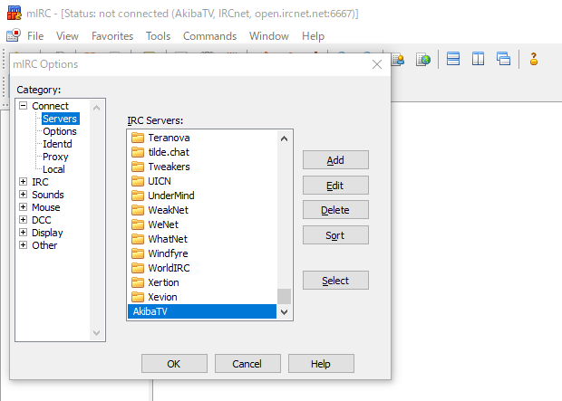
Select버튼을 누르시면 Connect메뉴로 돌아오게 됩니다.
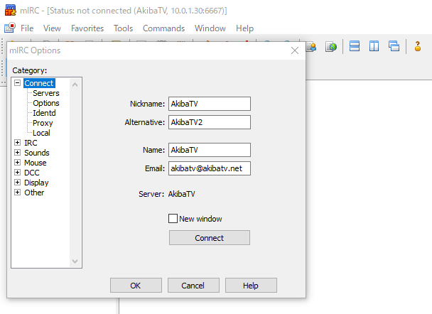
Connect버튼을 눌러주시기 바랍니다.
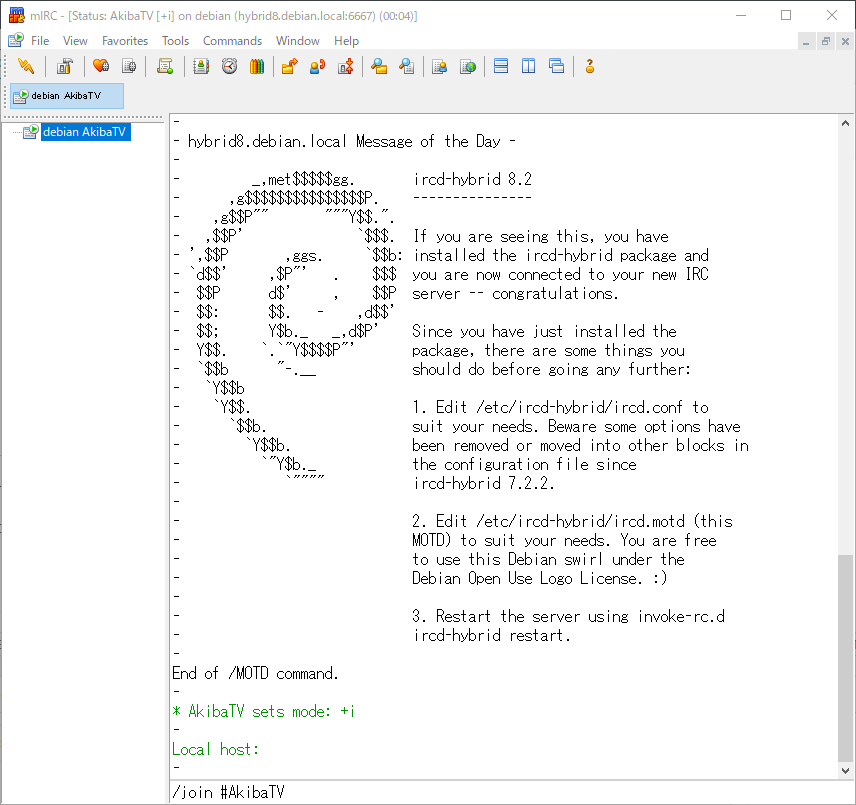
접속을 하시면 라즈베리파이로 구축한 irc서버로 연결이 된것을 확인하실수 있습니다.
위와같이 나오게 되면 하단의 입력창에 /join #채널명을 입력해서 채팅을 만드시거나 접속 하실수 있습니다.
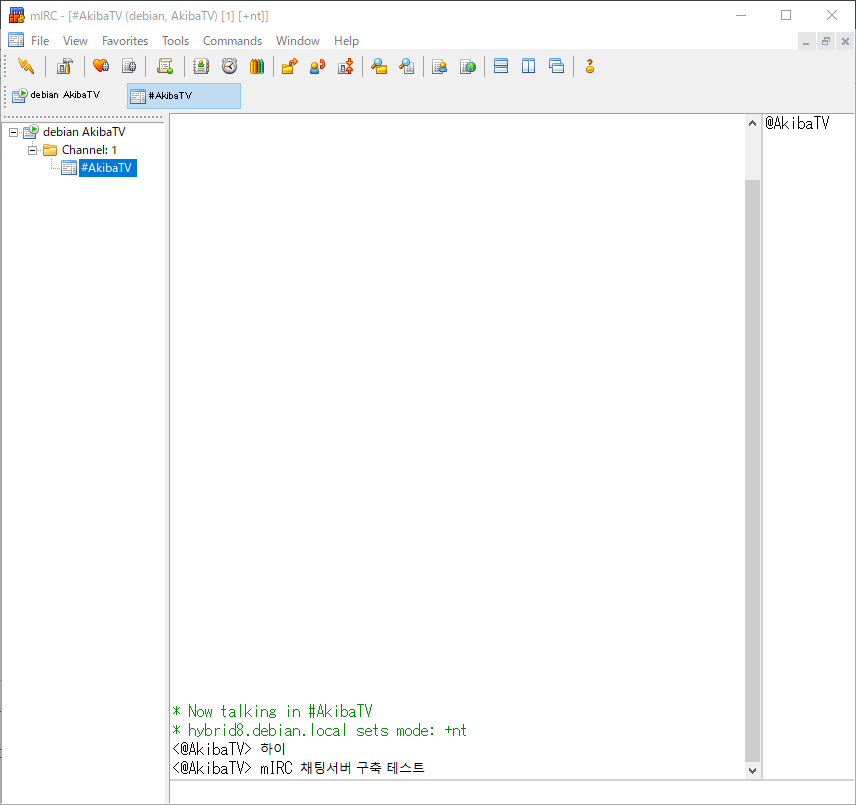
위와같이 채널에 접속이 되는것이 확인 되었습니다.
이렇게 해서 라즈베리파이에서 mIRC 채팅서버 구축하기를 해보았습니다.